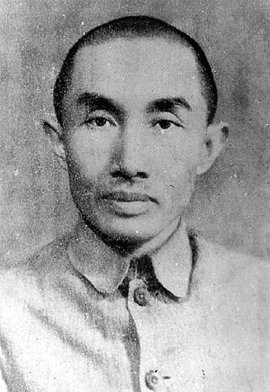

卢作孚，原名卢魁先，别名卢思

卢作孚，重庆合川人，近代著名爱国实业家、教育家、社会活动家；民生公司创始人、中国航运业先驱，被誉为“中国船王”、“北碚之父”。
卢作孚，原名卢魁先，别名卢思，重庆市合川人，近代著名爱国实业家、教育家、社会活动家；民生公司创始人、中国航运业先驱，被誉为“中国船王”、“北碚之父”。
1893年4月14日出生于四川省合川县，幼年家境贫寒，辍学后自学成材，自己编著多本教材；1910年，加入同盟会，从事反清保路运动，投身辛亥革命。